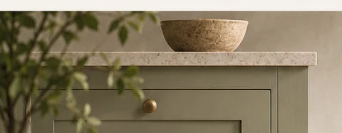

Replacement Kitchen Cabinet Doors
Refresh existing cabinetry with considered door profiles and finishes, without assuming the whole kitchen must be replaced.
Discuss your requirements ↗
considered.
Discover the details.
Often it is the doors that date a kitchen rather than the layout. Where existing cabinets are sound, a new front can be a measured alternative to full replacement.
Good cabinetry begins
with good measurements.
Our collection pages show design directions rather than confirmed manufactured SKUs. For a detailed quote, the room dimensions, finish, hardware, installation scope and delivery location must be agreed before an order can be considered.
Send a project brief ↗Before you begin
Can replacement doors fit existing kitchen units? +
They may, if measurements, hinge positions and carcass condition allow. A compatibility review is needed before manufacture.
What measurements are needed? +
Exact height, width, thickness, hinge cup positions and clearances. Measure each opening individually.
A space worth planning.
Share your measurements, ideas or a brief. We will use them to discuss a suitable cabinetry direction.